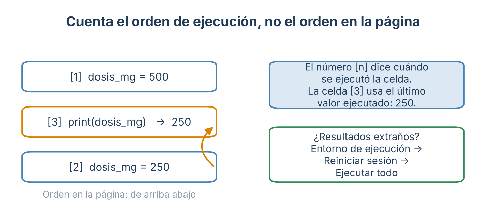

Bioestadística (1964) · Grado en Medicina · Curso 2027-2028
Tema 0Guía del entorno de trabajo: cuadernos Jupyter y Google Colab
Antes de empezar
Fernando Borrás Rocher · Universidad Miguel Hernández de Elche · CC BY 4.0
Objetivos de aprendizaje
Al terminar esta guía serás capaz de:
- Explicar qué es un cuaderno Jupyter y qué ofrece Google Colab.
- Abrir un cuaderno, guardar tu propia copia y organizarla en Google Drive.
- Reconocer las partes de la interfaz de Colab.
- Escribir celdas de texto con formato (Markdown) y fórmulas (LaTeX).
- Ejecutar celdas de código y entender el orden de ejecución.
- Crear un formulario sencillo para una calculadora clínica.
- Guardar una clave de acceso en el panel de Secretos y usar el asistente de IA con seguridad.
- Compartir, descargar y comentar un cuaderno.
Cómo usar esta presentación
Usa el selector de arriba para dar el tema en una sesión completa o en dos sesiones intercaladas.
🎓 Sesión de clase magistral
- 1. Cuadernos Jupyter y Google Colab
- 2. Primeros pasos
- 3. La interfaz de Colab
- 4. Celdas de texto: Markdown
- 5. Fórmulas con LaTeX
- 10. Guardar, compartir y descargar
- 11. Atajos de teclado
- 12. Autoevaluación
Explica los conceptos, haz la pausa activa y cierra con las ideas clave.
💻 Sesión de Colab
- 6. Celdas de código
- 7. Formularios
- 8. Gráficos
- 9. Secretos y asistente de inteligencia artificial
- 12. Autoevaluación
- 13. Reto: tu primer cuaderno clínico
Cada estudiante abre su copia del cuaderno, predice el resultado y después ejecuta la celda.
Teclas: ← → para pasar · N notas del profesor · M cambiar de modo · F pantalla completa · Esc índice.
Presentación
Toda la asignatura se trabaja en cuadernos de Google Colab como este. Un cuaderno reúne en un solo documento la explicación, el código de los cálculos y sus resultados. Así, cualquier persona puede repetir el análisis paso a paso.
En medicina este es un valor esencial. Si un análisis no se puede repetir, no se puede revisar. Y un resultado sin revisar no debe guiar decisiones clínicas. El cuaderno es como el protocolo de un laboratorio: documenta qué se hizo, con qué datos y en qué orden.
Esta guía no exige ningún conocimiento previo de programación. Léela con el cuaderno abierto y ejecuta cada celda de código a medida que avances.
1. Cuadernos Jupyter y Google Colab
Un cuaderno Jupyter (Jupyter Notebook) es un documento interactivo que combina texto, código ejecutable y resultados: números, tablas y gráficos. Lo desarrolla el Proyecto Jupyter, de código abierto, y sus ficheros tienen la extensión .ipynb.
Google Colab (Colaboratory) es un servicio gratuito de Google que permite abrir y ejecutar cuadernos Jupyter desde el navegador:
- No hay que instalar nada: el código se ejecuta en un servidor de Google.
- Los cuadernos se guardan en Google Drive, como cualquier otro documento de Google.
- Se pueden compartir y comentar como un documento de texto.
- Incluye un asistente de inteligencia artificial que ayuda a escribir y explicar código.
En esta asignatura usaremos el lenguaje Python, el más extendido en ciencia de datos y en investigación biomédica.
2. Primeros pasos
Paso 1. Inicia sesión en tu cuenta de Google en el navegador (Chrome, Firefox, Edge o Safari).
Paso 2. Abre el cuaderno. Los cuadernos de la asignatura se abren con el botón Abrir en Colab de su cabecera o desde el repositorio de la asignatura.
Paso 3. Guarda tu copia. El cuaderno original es de solo lectura para ti. Antes de escribir nada, ve a Archivo → Guardar una copia en Drive. Colab crea la copia en la carpeta Colab Notebooks de tu Drive y la abre en una pestaña nueva. Trabaja siempre en tu copia.
Paso 4. Ponle nombre. Haz clic en el nombre del cuaderno, arriba a la izquierda, y renómbralo. Te recomendamos una carpeta en Drive para la asignatura y nombres del tipo Tema_010_tu_nombre.ipynb.
Paso 5. Conéctate. Al ejecutar la primera celda de código, Colab se conecta a un servidor (arriba a la derecha aparece Conectado y el uso de memoria RAM). Si dejas el cuaderno inactivo un tiempo, la conexión se pierde y hay que volver a ejecutar las celdas.
3. La interfaz de Colab
| Zona | Qué contiene |
|---|---|
| Barra de menús (arriba) | Archivo, Editar, Ver, Insertar, Entorno de ejecución, Herramientas, Ayuda |
| Botones + Código y + Texto | Añaden una celda de código o de texto debajo de la celda seleccionada |
| Indicador de conexión (arriba a la derecha) | Estado del servidor y memoria utilizada |
| Barra lateral izquierda | Índice del cuaderno, búsqueda, variables, Secretos (icono de la llave) y archivos |
| Cuerpo del cuaderno | La secuencia de celdas, de arriba abajo |
El índice de la barra lateral se construye solo a partir de los encabezados de las celdas de texto. Úsalo para moverte por cuadernos largos.
4. Celdas de texto: Markdown
Las celdas de texto se escriben en Markdown, un lenguaje de marcas muy sencillo. Haz doble clic en una celda de texto para editarla y pulsa Mayús + Intro para ver el resultado.
| Escribes | Obtienes |
|---|---|
**Diagnóstico principal** |
Diagnóstico principal |
*diabetes mellitus tipo 2* |
diabetes mellitus tipo 2 |
`peso_kg` |
peso_kg |
[Guía de la OMS](https://www.who.int) |
Guía de la OMS |
# Título, ## Apartado, ### Subapartado |
Encabezados de tres niveles |
- Elemento |
Lista con viñetas |
1. Elemento |
Lista numerada |
--- |
Línea horizontal |
Ejemplo: una nota clínica con formato. Haz doble clic en esta celda para ver cómo está escrita.
Paciente sintético 001
Motivo de consulta: control de hipertensión arterial.
Constantes:
- Presión arterial: 148/92 mmHg
- Frecuencia cardiaca: 78 lpm
- IMC: 25,6 kg/m²
Plan: repetir la medición en dos semanas y valorar ajuste de tratamiento.
| Fecha | PAS (mmHg) | PAD (mmHg) |
|---|---|---|
| 01/09 | 152 | 94 |
| 15/09 | 148 | 92 |
Las imágenes publicadas en internet se insertan con . El texto alternativo describe la imagen para quien no puede verla; escríbelo siempre.
5. Fórmulas con LaTeX
Las fórmulas se escriben en LaTeX entre signos de dólar. Con un $` la fórmula queda dentro de la línea; con `$$ queda centrada en su propia línea.
| Escribes | Obtienes |
|---|---|
$x^2$ |
$x^2$ |
$x_i$ |
$x_i$ |
$\frac{a}{b}$ |
$\frac{a}{b}$ |
$\sqrt{x}$ |
$\sqrt{x}$ |
$\bar{x}$ |
$\bar{x}$ |
$\sum_{i=1}^{n} x_i$ |
$\sum_{i=1}^{n} x_i$ |
$\mu$, $\sigma$, $\alpha$ |
$\mu$, $\sigma$, $\alpha$ |
Tres fórmulas que usaremos durante el curso:
Índice de masa corporal: $$\text{IMC} = \frac{\text{peso (kg)}}{\text{talla (m)}^2}$$
Sensibilidad de una prueba diagnóstica: $$\text{Se} = \frac{VP}{VP + FN}$$
Media de una muestra de $n$ pacientes: $$\bar{x} = \frac{1}{n}\sum_{i=1}^{n} x_i$$
6. Celdas de código
▶ En tu cuaderno: 6. Celdas de código. Antes de ejecutar, escribe qué esperas obtener.
Una celda de código contiene instrucciones en Python. Para ejecutarla, haz clic en el botón ▶ que aparece a su izquierda o pulsa Mayús + Intro. El resultado aparece justo debajo.
Lo que va detrás de # es un comentario: Python no lo ejecuta, pero explica el código a quien lo lee.
# Esto es un comentario: Python lo ignora
print("Hola, Medicina")6. Celdas de código
Las celdas comparten memoria
▶ En tu cuaderno: Las celdas comparten memoria. Antes de ejecutar, escribe qué esperas obtener.
Lo que se define en una celda queda disponible para las demás una vez ejecutada. Ejecuta las dos celdas siguientes en orden.
frecuencia_cardiaca_lpm = 78print("Frecuencia cardiaca:", frecuencia_cardiaca_lpm, "lpm")6. Celdas de código
El orden de ejecución
▶ En tu cuaderno: El orden de ejecución. Antes de ejecutar, escribe qué esperas obtener.
El número que aparece a la izquierda de cada celda, como [3], indica en qué orden se ejecutó. Lo que cuenta es el orden en que ejecutas las celdas, no el orden en que aparecen. Si cambias un valor en una celda de arriba y no la ejecutas otra vez, las celdas de abajo usan el valor antiguo.
Si el cuaderno se comporta de forma extraña, reinicia la sesión en el menú Entorno de ejecución. Después, ejecuta todas las celdas desde el principio.
Las celdas muestran el último resultado
Si la última línea de una celda es una expresión, Colab muestra su valor sin necesidad de print.

# Presión arterial media (PAM) aproximada a partir de 148/92 mmHg
92 + (148 - 92) / 36. Celdas de código
Los mensajes de error
▶ En tu cuaderno: Los mensajes de error. Antes de ejecutar, escribe qué esperas obtener.
Cuando algo falla, Python muestra un mensaje de error. Léelo desde la última línea: ahí está el tipo de error y su causa. Quita el # de la línea siguiente, ejecuta la celda y observa el mensaje; después vuelve a poner el #.
# print(saturacion_oxigeno)El mensaje NameError: name 'saturacion_oxigeno' is not defined indica que la variable no existe. O nunca se definió, o no se ha ejecutado la celda que la define.
7. Formularios
▶ En tu cuaderno: 7. Formularios. Antes de ejecutar, escribe qué esperas obtener.
Los formularios de Colab convierten una celda de código en una pequeña aplicación con campos para introducir datos. Basta con añadir comentarios especiales: #@title para el título y #@param para cada campo.
Cambia el peso y la talla en el formulario y ejecuta la celda.
peso_kg = 68 #@param {type:"number"}
talla_m = 1.63 #@param {type:"number"}
imc = peso_kg / talla_m ** 2
if imc < 18.5:
categoria = "bajo peso"
elif imc < 25:
categoria = "peso normal"
elif imc < 30:
categoria = "sobrepeso"
else:
categoria = "obesidad"
print(f"IMC: {imc:.1f} kg/m² ({categoria}, según la clasificación de la OMS)")Con el menú de tres puntos de la celda puedes ocultar el código y dejar visible solo el formulario. Así funcionan las celdas de configuración y de preguntas de estos cuadernos.
8. Gráficos
▶ En tu cuaderno: 8. Gráficos. Antes de ejecutar, escribe qué esperas obtener.
Una celda de código puede producir gráficos. No necesitas entender todavía este código; aprenderás a escribirlo en el Tema 60.
import matplotlib.pyplot as plt
dias = [1, 2, 3, 4, 5, 6, 7]
glucemia_mg_dl = [142, 135, 128, 131, 120, 118, 112]
plt.plot(dias, glucemia_mg_dl, marker="o")
plt.axhline(100, linestyle="--", color="gray", label="Límite de normalidad en ayunas")
plt.xlabel("Día de seguimiento")
plt.ylabel("Glucemia en ayunas (mg/dL)")
plt.title("Paciente sintético 002: glucemia durante una semana")
plt.legend()
plt.show()9. Secretos y asistente de inteligencia artificial
El asistente de Colab
▶ En tu cuaderno: El asistente de Colab. Antes de ejecutar, escribe qué esperas obtener.
Colab incluye un asistente de inteligencia artificial que puede generar, explicar y corregir código. Es una ayuda muy útil, con tres normas que se aplican en toda la asignatura:
- Nunca introduzcas datos reales de pacientes: ni nombres, ni números de historia clínica, ni ningún dato que identifique a una persona. Lo prohíbe el Reglamento General de Protección de Datos (Reglamento (UE) 2016/679) y el deber de secreto profesional.
- Verifica siempre lo que propone: ejecútalo, compruébalo con un caso cuyo resultado conozcas y asegúrate de entender cada línea.
- El responsable eres tú. El asistente puede equivocarse con total seguridad; un error en un análisis clínico tiene consecuencias.
Las claves de acceso (API keys)
Para usar modelos de IA desde el código o desde la app de la asignatura, necesitas una clave de acceso personal. Es como una contraseña: quien la tenga puede usarla en tu nombre y consumir tu cuota.
- Nunca la escribas en una celda de código ni la compartas.
- Guárdala en el panel Secretos (icono de la llave en la barra lateral). Pulsa Añadir nuevo secreto y escribe un nombre (por ejemplo
GEMINI_API_KEY). Pega la clave en el valor. - Activa el acceso del cuaderno a ese secreto con el interruptor correspondiente.
El Tema 10 explica paso a paso cómo conseguir una clave gratuita de Google Gemini o una de pago de OpenAI.
La celda siguiente comprueba si la clave existe sin mostrarla.
try:
from google.colab import userdata
clave = userdata.get("GEMINI_API_KEY")
print("Clave configurada:", clave is not None)
except Exception as error:
print("No hay clave configurada o el cuaderno no se ejecuta en Colab:", type(error).__name__)10. Guardar, compartir y descargar
| Acción | Cómo |
|---|---|
| Guardar tu copia | Archivo → Guardar una copia en Drive (la primera vez); después, Ctrl + S |
| Recuperar una versión anterior | Archivo → Historial de revisiones |
| Compartir | Botón Compartir, arriba a la derecha, como en cualquier documento de Google |
| Descargar | Archivo → Descargar → Descargar .ipynb |
| Comentar una celda | Icono de comentario de la celda |
Antes de compartir un cuaderno, comprueba que no contiene claves de acceso ni datos de personas reales.
11. Atajos de teclado
| Atajo | Acción |
|---|---|
Mayús + Intro |
Ejecutar la celda y pasar a la siguiente |
Ctrl + Intro |
Ejecutar la celda sin moverse |
Ctrl + M, después B |
Insertar una celda de código debajo |
Ctrl + M, después M |
Convertir la celda en texto |
Ctrl + M, después Y |
Convertir la celda en código |
Ctrl + M, después D |
Eliminar la celda |
Ctrl + / |
Convertir en comentario las líneas seleccionadas |
En Mac, sustituye Ctrl por Cmd.
12. Autoevaluación
Ejecuta la celda (si no has ejecutado antes la configuración, hazlo primero) y responde a las preguntas.
12. Autoevaluación
Elige una opción: verás la explicación.
Abres un cuaderno de la asignatura desde el botón «Abrir en Colab». ¿Qué debes hacer antes de modificarlo?
Defines la variable peso_kg en la celda 3 pero no la ejecutas. Al ejecutar la celda 4, que usa peso_kg, ¿qué ocurre?
¿Cómo se escribe en una celda de texto la palabra «hipertensión» en negrita?
¿Dónde se debe guardar la clave de acceso a un modelo de IA?
¿Cuál de estas peticiones al asistente de IA cumple las normas de la asignatura?
13. Reto: tu primer cuaderno clínico
Crea un cuaderno nuevo (Archivo → Cuaderno nuevo en Drive), llámalo Tema_000_reto_tu_nombre.ipynb y construye en él:
- Una celda de texto con un título de nivel 1 y tu nombre en negrita.
- Una celda de texto con la nota clínica de un paciente inventado: motivo de consulta, lista de constantes y tabla con dos mediciones.
- Una celda de texto con la fórmula del IMC escrita en LaTeX.
- Una celda de código que guarde el peso y la talla de tu paciente en variables y muestre su IMC con un decimal.
- Una celda de código con un formulario que calcule la presión arterial media a partir de la sistólica y la diastólica: $$\text{PAM} \approx \text{PAD} + \frac{\text{PAS} - \text{PAD}}{3}$$
- Un comentario en alguna celda explicando qué hace.
Comprueba al final que el cuaderno no contiene datos reales de nadie ni ninguna clave de acceso.
Para saber más
Tema 0 · Bioestadística (1964) · Grado en Medicina · Universidad Miguel Hernández de Elche · Fernando Borrás Rocher · CC BY 4.0